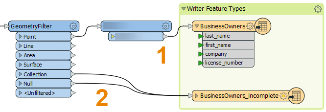
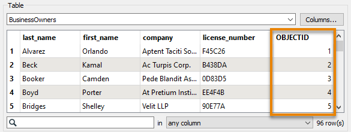

After completing this unit, you’ll be able to:
FME workspaces send data from left to right across the canvas from reader feature types to writer feature types. The simplest workspace only has one “stream” of data: features are read in, all processed in the same way, and then written out. However, workspaces can have multiple streams of data, splitting and merging features as required.
In Jennifer's workspace, the GeometryFilter created multiple streams when it split the PostGIS features into point and null geometry. She now has two streams coming out of the GeometryFilter: #1 contains point geometry features going to the BusinessOwners feature type, and #2 contains features missing geometry going to the BusinessOwners_incomplete feature type.

Jennifer has been given a CSV file with a list of business license numbers that have been flagged to be revoked. She would like to use this list to filter out features with revoked licenses from her source data before writing to the geodatabase.
Jennifer adds a CSV reader and reads the revoked licenses file. She then uses a FeatureJoiner to join the revoked license data to her existing BusinessOwners data. Now her features have a “revoked_license” attribute that can be used to filter out the businesses with revoked licenses.
Jennifer adds a Tester between the FeatureJoiner and the GeometryFilter using Quick Add so she can filter out the stream of data to get all businesses with valid licenses only.

To do this, she double-clicks the Tester to open its Parameters dialog. The table here allows her to enter a logical test or series of tests against incoming features. It works a bit like an “if-then-else” statement in programming languages. If the feature meets the criteria of the test(s), it comes out of the Passed port. If it does not, it comes out of the Failed port. The Tester is used to filter data and allows for simple branching of your data integration workflow.
Jennifer sets up her Tester as follows:
| Logic |
Left Value |
Operator |
Right Value |
| NOT |
🠈 revoked_license |
Attribute Has a Value |
<Unused> |
These settings do the following: “For each feature being read by the Tester, if it does NOT have a value for the attribute “revoked_license”, it passes. Otherwise, it fails.” This test accomplishes our goal of sending any features with a revoked license to the Failed port. Jennifer uses Run to This on the Tester and sees 167 results come out of the Passed port and four come out of the Failed port.
Jennifer inspects the Tester cache to make sure the correct features were filtered out. She clicks the Tester:Failed feature cache and sees Visual Preview’s Table View reporting in the bottom-right corner that 4 rows are being displayed, meaning the four revoked licenses have been filtered out successfully via the Failed port.

She can confirm the correct features failed because their “license_number” and “revoked_license” attributes match.
Now that her workspace is complete, Jennifer turns off feature caching from the toolbar (Run > uncheck Enable Feature Caching) and then clicks Run. Her entire workspace runs successfully.
Then she clicks the BusinessOwners writer feature type to select it and clicks View Written Data. This shows the 96 valid records that were written to this feature class. Note that FME automatically added the required OBJECTID column to the data as required by the geodatabase format.


Using the same method to inspect BusinessOwners_incomplete shows the 71 features with missing values.

Jennifer clicks one of the writer feature types and then Open Containing Folder, viewing the geodatabase in her file browser. From there she can open the geodatabase in ArcCatalog, ArcMap, or ArcGIS Pro.

Make sure you have followed along with Jennifer’s steps.